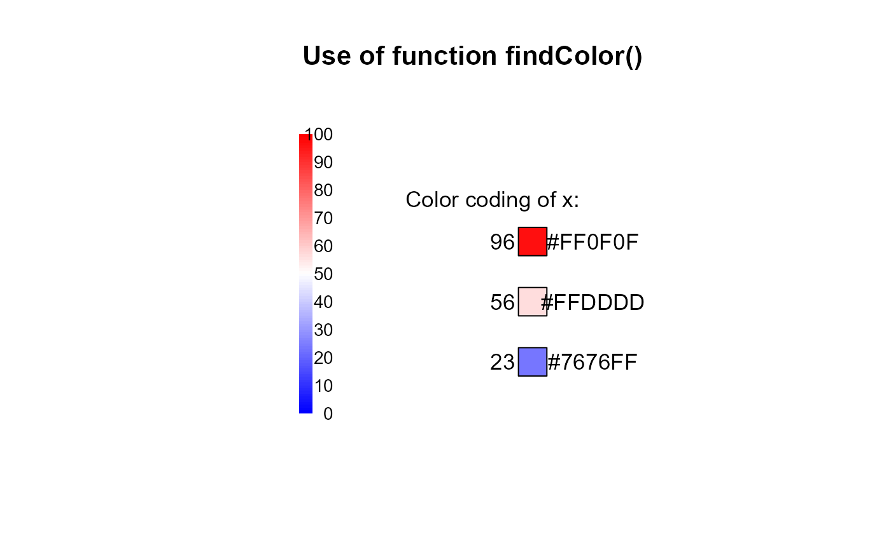
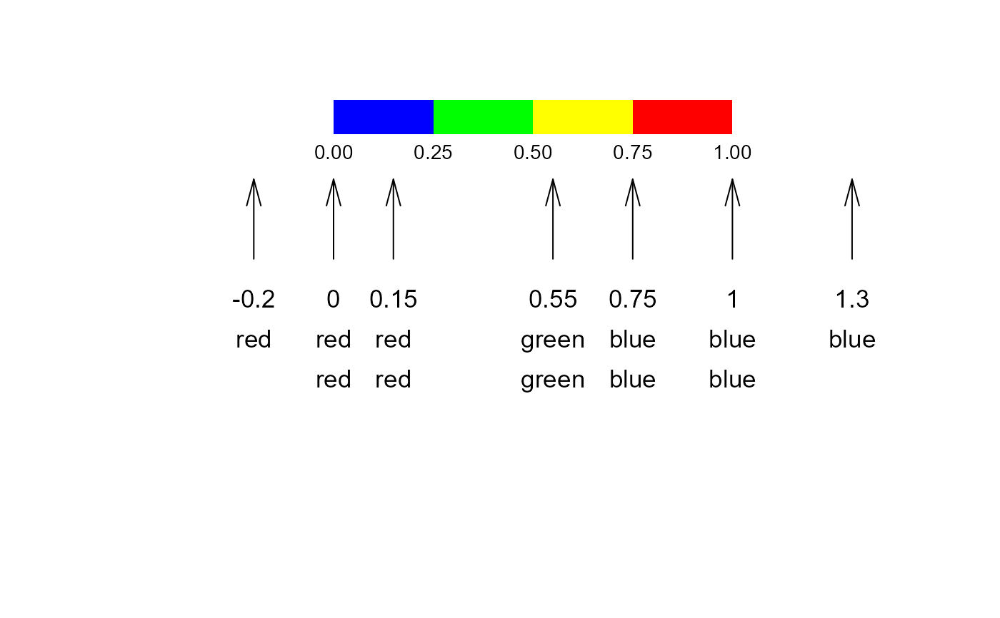

Find a color on a defined color range depending on the value of x. This is helpful for colorcoding numeric values.
Usage
findColor(
x,
col = rev(heat.colors(100)),
minX = NULL,
maxX = NULL,
allInside = FALSE
)Arguments
- x
numeric.
- col
a vector of colors.
- minX
the x-value to be used for the left edge of the first color. If left to the default
NULLmin(pretty(x))will be used.- maxX
the x-value to be used for the right edge of the last color. If left to the default
NULLmax(pretty(x))will be used.- allInside
logical; if true, the returned indices are coerced into
1, ..., N-1, i.e.,0is mapped to1andNtoN-1.
Details
For the selection of colors the option rightmost.closed in the used
function findInterval is set to TRUE. This will ensure that
all values on the right edge of the range are assigned a color. How values
outside the boundaries of minX and maxX should be handled can be
controlled by allInside. Set this value to TRUE, if those values
should get the colors at the edges or set it to FALSE, if they should remain
white (which is the default).
Note that findInterval closes the intervals on the left side,
e.g. [0, 1). This option can't be changed. Consequently will x-values lying
on the edge of two colors get the color of the bigger one.
See also
Other color.lookup:
contrastColor()
Examples
canvas(7, main="Use of function findColor()")
# get some data
x <- c(23, 56, 96)
# get a color range from blue via white to red
cols <- colorRampPalette(c("blue","white","red"))(100)
colLegend(x="bottomleft", col=cols, labels=seq(0, 100, 10), cex=0.8)
# and now the color coding of x:
(xcols <- findColor(x, cols, minX=0, maxX=100))
#> [1] "#7676FF" "#FFDDDD" "#FF0F0F"
# this should be the same as
cols[x+1]
#> [1] "#7676FF" "#FFDDDD" "#FF0F0F"
# how does it look like?
y0 <- c(-5, -2, 1)
text(x=1, y=max(y0)+2, labels="Color coding of x:")
text(x=1.5, y=y0, labels=x)
polygon(regPolygon(x=3, y=y0, numVertices=4, startAngle=pi/4), col=xcols)
text(x=6, y=y0, labels=xcols)

# how does the function select colors?
canvas(xlim = c(0,1), ylim = c(0,1))
cols <- c(red="red", yellow="yellow", green="green", blue="blue")
colLegend(x=0, y=1, width=1, col=rev(cols), horiz = TRUE,
labels=format(seq(0, 1, .25), digits=2, nsmall=2),
frame="grey", cex=0.8 )
#> Warning: "frame" is not a graphical parameter
x <- c(-0.2, 0, 0.15, 0.55, .75, 1, 1.3)
arrows(x0 = x, y0 = 0.6, y1 = 0.8, angle = 15, length = .2)
text(x=x, y = 0.5, labels = x, adj = c(0.5,0.5))
text(x=x, y = 0.4, labels = names(findColor(x, col=cols,
minX = 0, maxX = 1, allInside = TRUE)), adj = c(0.5,0.5))
text(x=x, y = 0.3, labels = names(findColor(x, col=cols,
minX = 0, maxX = 1, allInside = FALSE)), adj = c(0.5,0.5))
